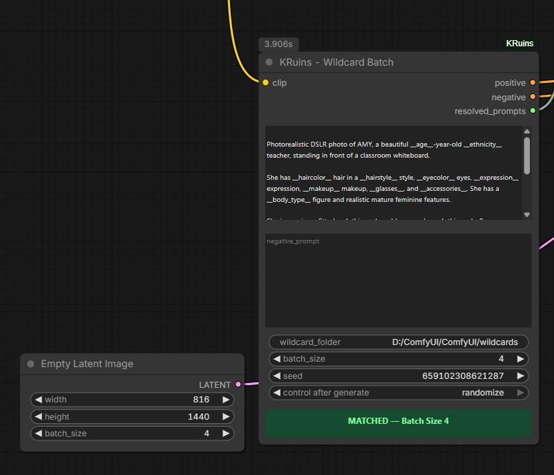
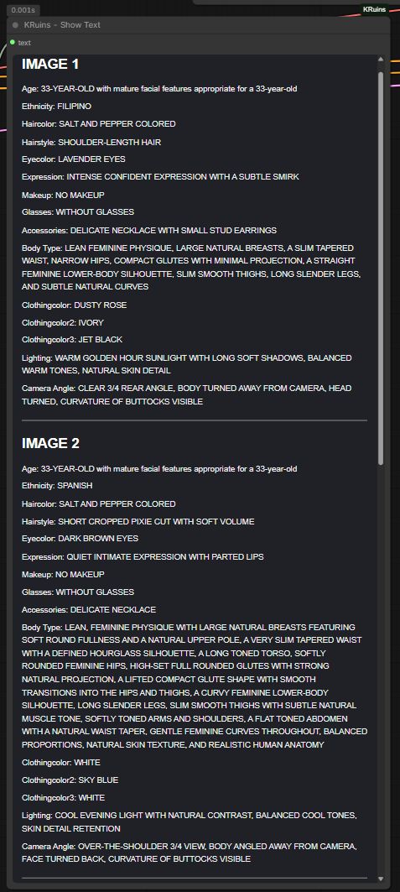
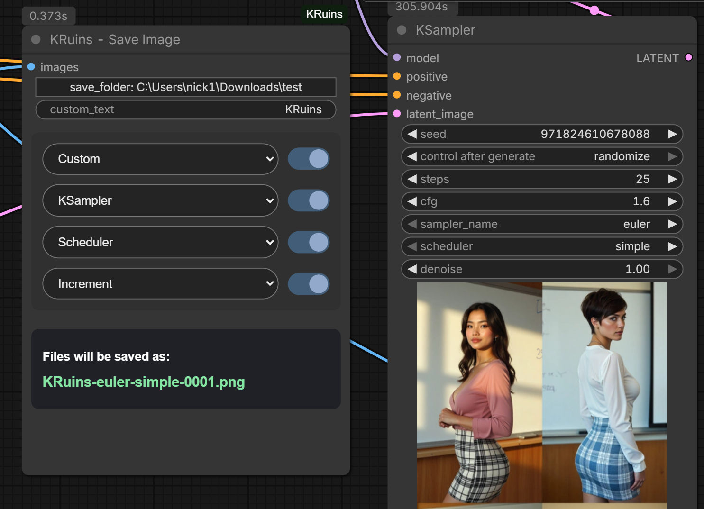
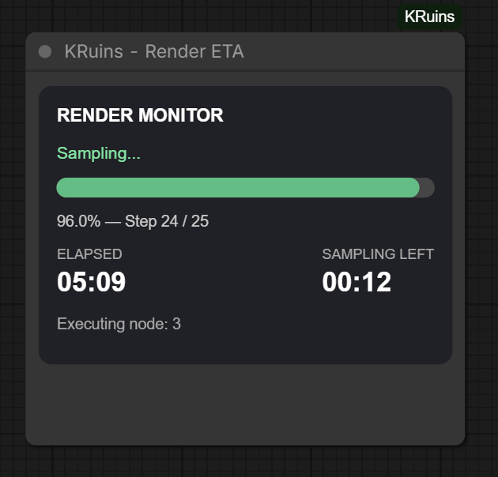
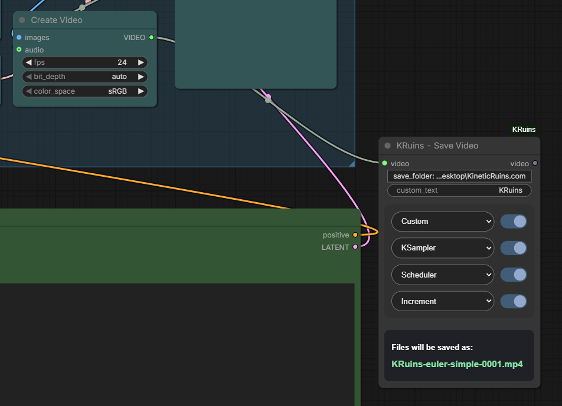
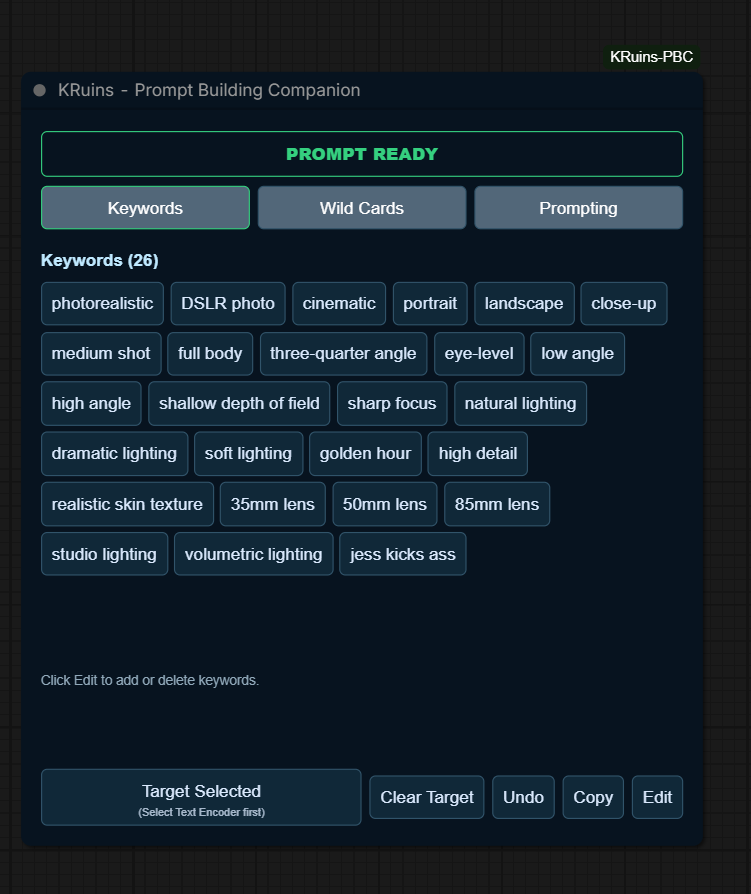
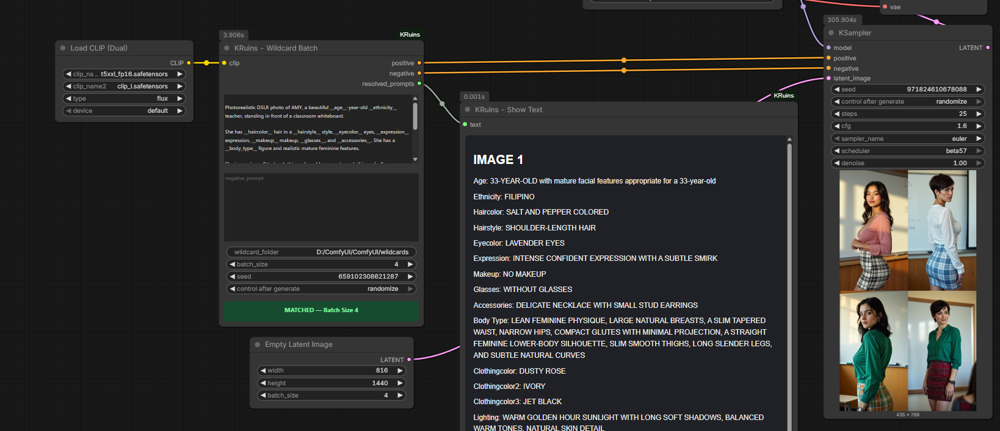
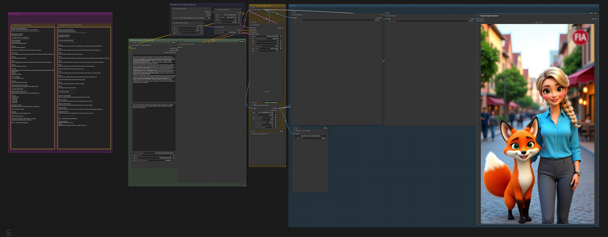
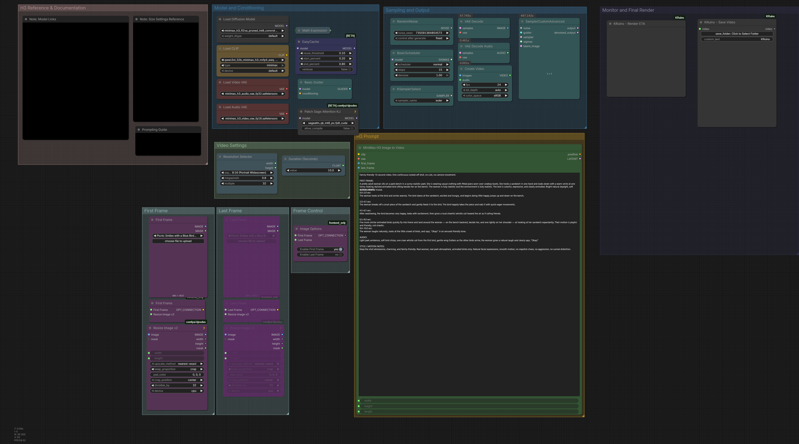
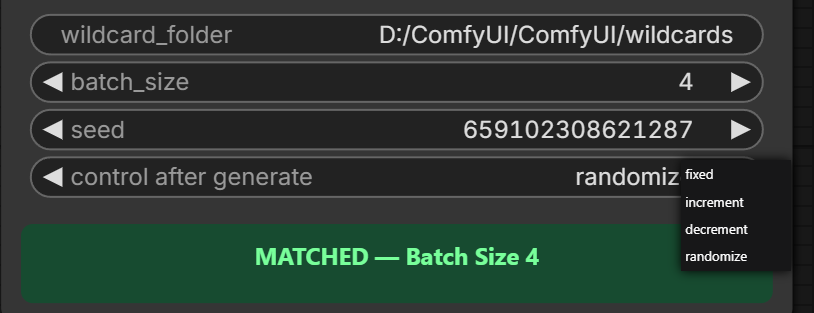

3-in-1 Prompt Tool
Wildcard Batch
Generate independent wildcard variations for every image in a batch. Includes positive and negative CLIP encoding, seed controls, and batch-size validation.

Free custom ComfyUI nodes, illustrated tutorials, downloadable image and video workflows, family-friendly wildcard resources, and MiniMax H3 prompting guides.
Learn each KRuins node with actual screenshots, instructions, usage examples, and troubleshooting tips.

Generate independent wildcard variations for every image in a batch. Includes positive and negative CLIP encoding, seed controls, and batch-size validation.

Displays only the actual wildcard values selected for each image, leaving out the rest of the prompt for quick reference. Results are organized by image number in a scrollable, resizable viewer.

Save PNG images with flexible filename ordering, four independent component toggles, custom save locations, sampler and scheduler detection, and automatic overwrite protection.

Track elapsed time, sampling progress, estimated remaining time, and render completion directly on your ComfyUI canvas. No wiring required.

Save MP4 videos using custom filenames, folder selection, automatic sampler and scheduler detection, overwrite protection, and an integrated playable video preview.

Build prompts with custom keyword buttons, manage wildcard TXT files and folders, import entire ZIP packs in one click, and save reusable prompt presets. Built for KRuins Wildcard Batch and Show Text, with compatible wildcard resolver support.

Not sure where to start? Browse our documentation index for the original five illustrated node guides, example workflows, and additional resources.
Real ComfyUI workflows for image and video generation. Download the JSON or drag the workflow PNG directly onto your ComfyUI canvas.

Demonstrates Wildcard Batch, Show Text, Render ETA, and Save Image working together. Includes workflow groups, configuration notes, and independent image-batch variations.

Family-friendly image-to-video workflow demonstrating H3 prompting, first-frame conditioning, resolution settings, Render ETA, and Save Video.
Learn to create randomized prompt variations and organize your own wildcard text files.

Wildcard files let you automatically substitute different values in your prompts. This makes it easier to generate variations without rewriting your entire prompt.
Learn wildcard syntax, text-file organization, folder setup, seed settings, and how to use wildcard selections with KRuins Wildcard Batch.
Download the free KRuins wildcard collection for creative, randomized image-generation prompts. Explore clothing, hairstyles, expressions, lighting, and other prompt attributes.
With KRuins Prompt Building Companion, import the complete ZIP directly from the Wild Cards tab. PBC creates missing folders and installs the included TXT files automatically.
Learn how to structure coherent, cinematic, family-friendly AI video prompts.
Explore structured action beats, consistent camera direction, character continuity, sound cues, scene progression, and concise motion instructions.
Our Kinetic Ruins H3 guide includes a family-friendly example video and the corresponding prompt, demonstrating a whimsical park scene with a woman and an animated bird.
The KRuins five-node suite is published in the official ComfyUI Registry.
Install through supported versions of ComfyUI Manager or use the Comfy CLI.
comfy node install kruins-node-suite
The native graphical folder-selection dialog currently requires Windows. Video-saving functionality requires a compatible ComfyUI version with VIDEO support.
PBC is published separately from the original five-node suite. Install through a supported ComfyUI Manager or the Comfy CLI, or download the GitHub source into custom_nodes/KRuins-PBC and restart ComfyUI.
comfy node install kruins-pbcWe welcome feedback and ideas for improving the KRuins Node Suite.